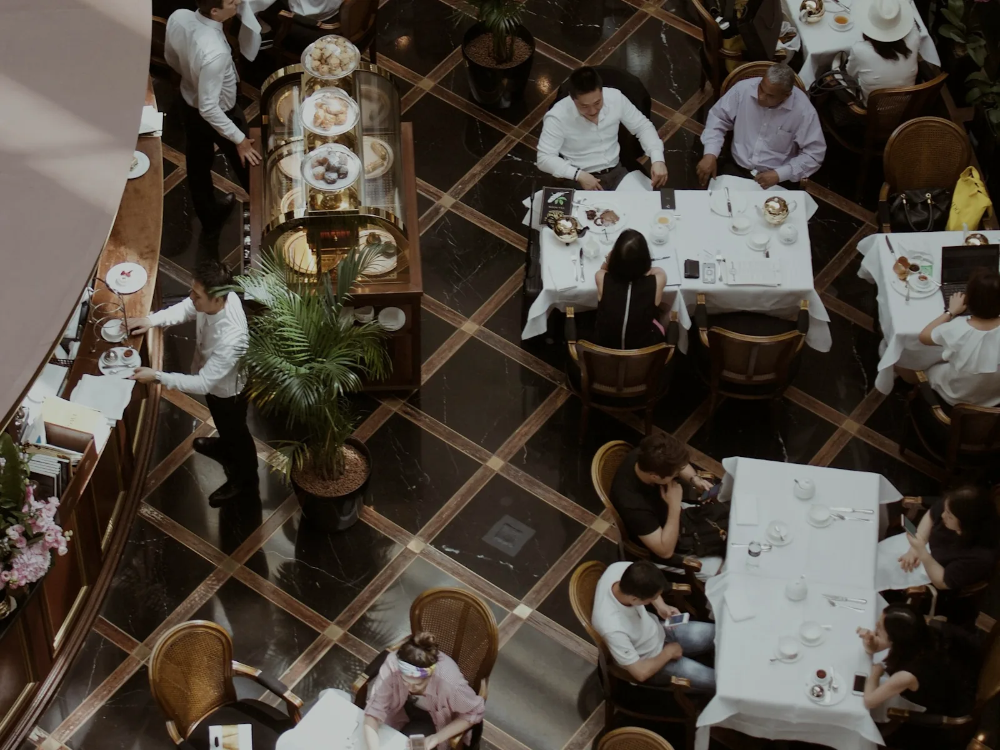
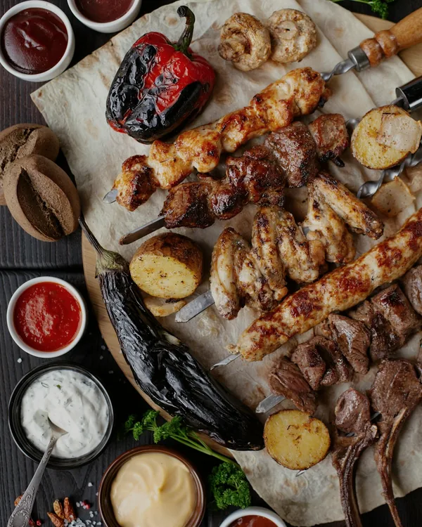
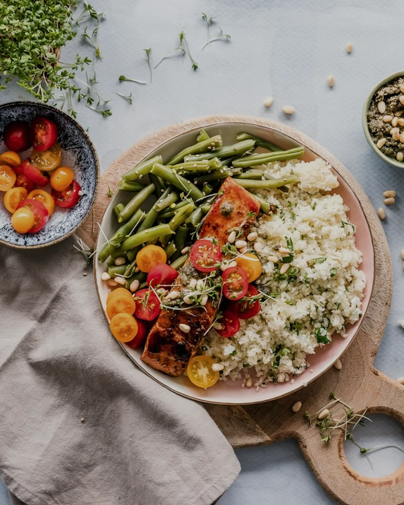
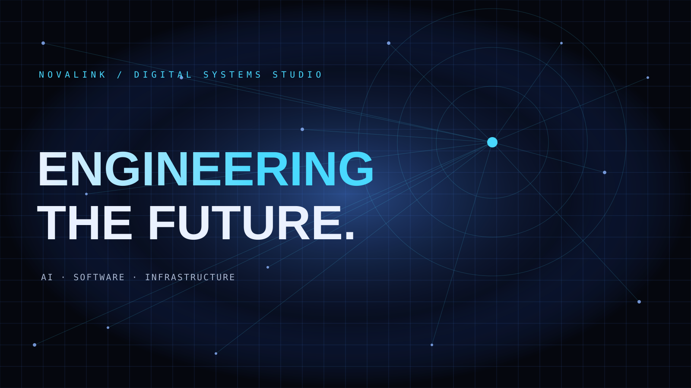
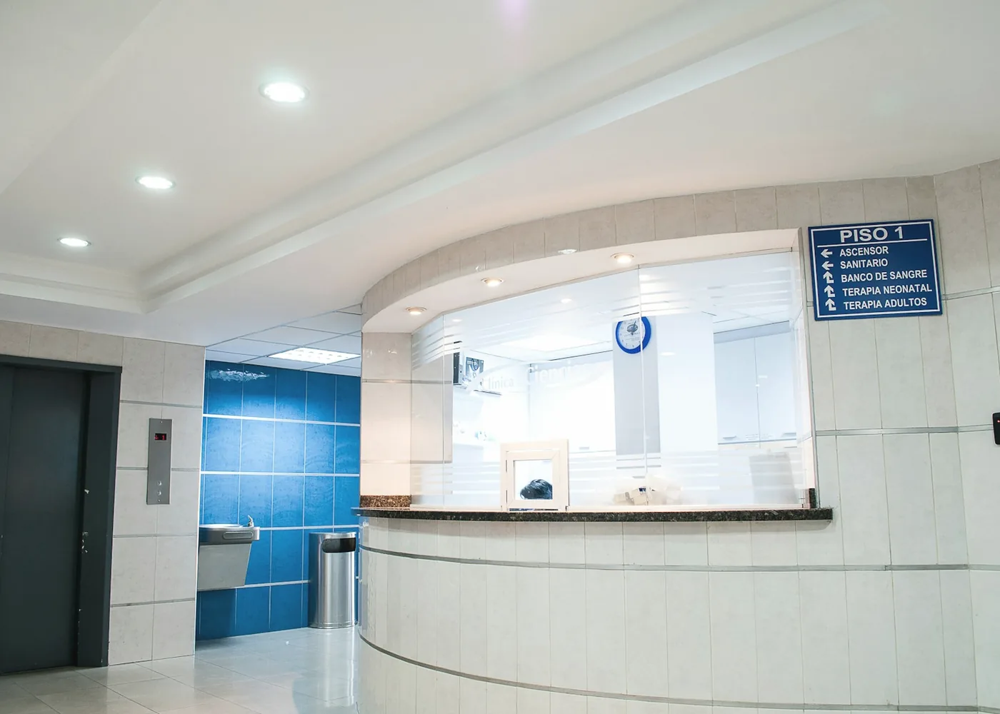
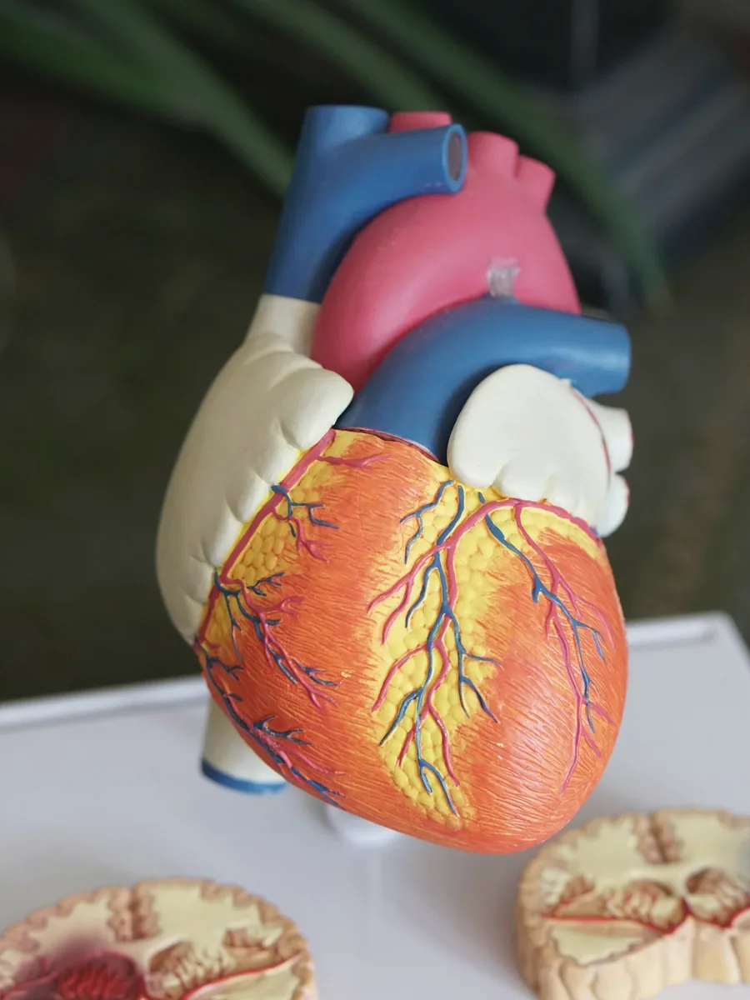
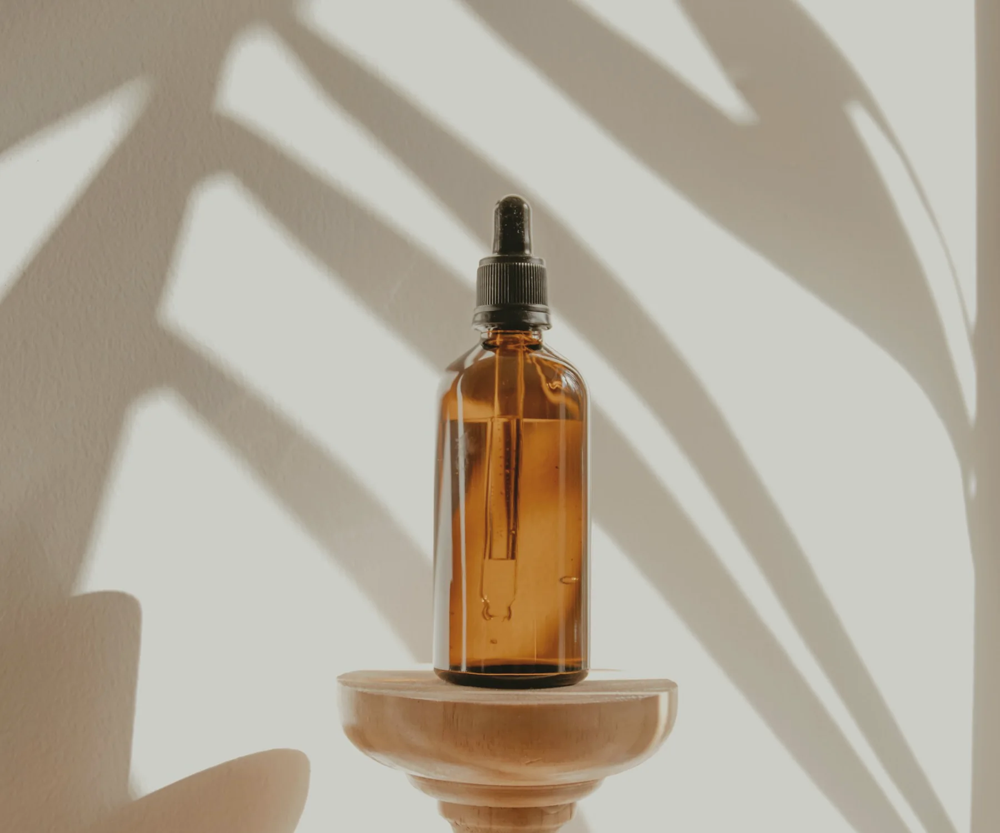
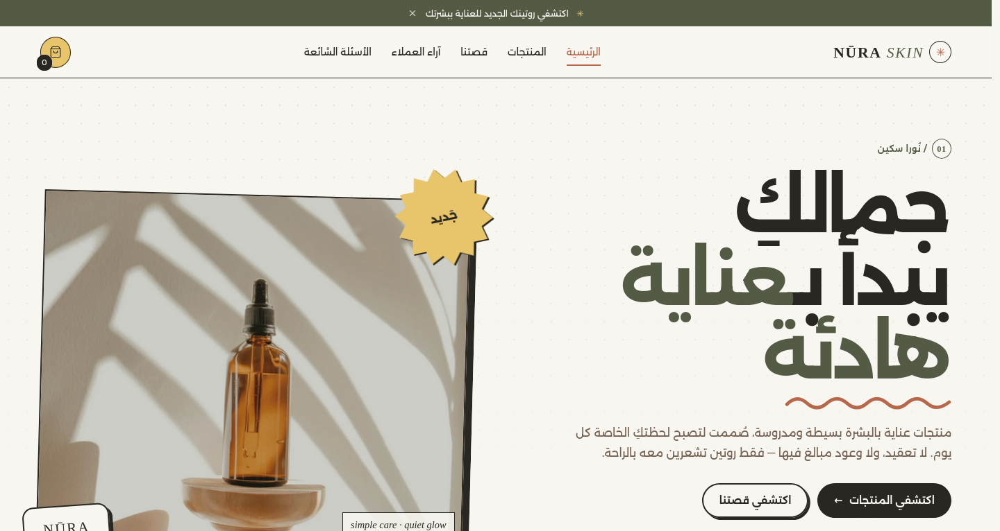
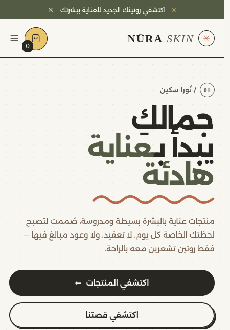
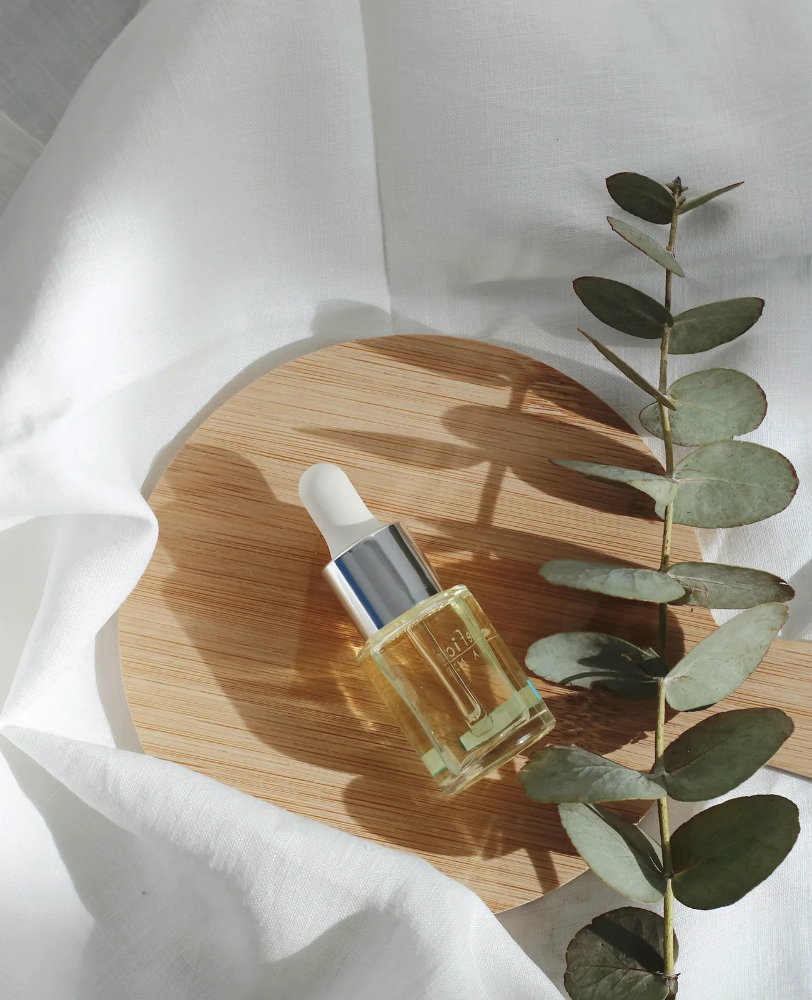

RESTAURANT · BRAND EXPERIENCE
NOIRÉ®
An editorial restaurant website shaped around atmosphere, contemporary dining, and a refined guest journey.
NEXT.JS / REACT / TYPESCRIPTEXPLORE LIVE SITE ↗



DESIGN-MINDED WEB DEVELOPER
I build thoughtful websites that give businesses a sharper online presence — combining clear design, responsive development, and useful interactions.
LESS NOISE. MORE PURPOSE.
A good website should look considered, feel effortless, and help people take the next step. Every detail has a job — from the first impression to the final interaction.
02 / SELECTED WORK
Self-initiated concept builds exploring hospitality, technology, healthcare, and beauty — each with its own visual language and user journey.
RESTAURANT · BRAND EXPERIENCE
An editorial restaurant website shaped around atmosphere, contemporary dining, and a refined guest journey.




02 / TECHNOLOGYVIEW PROJECT ↗TECHNOLOGY · CORPORATE WEBSITE
A cinematic technology studio concept using an obsidian-and-cobalt visual system, network graphics, and clear service storytelling.
HEALTHCARE · SERVICE WEBSITE
A human-centered medical center concept with specialty discovery, doctor profiles, patient services, and a guided demo booking flow.



04 / BEAUTY & SKINCAREVIEW PROJECT ↗BEAUTY · SKINCARE E-COMMERCE CONCEPT
An Arabic-first skincare storefront with a warm editorial identity, playful Joyful-inspired details, product discovery, and a fully interactive demo shopping bag.



PROJECT NOTE — These are self-initiated portfolio concepts, not commissioned client work. Fictional brand details, testimonials, and demo interactions are presented for demonstration; booking, inquiry, newsletter, and shopping features are not production services.
A LITTLE ABOUT ME
I'm Ahmed Shaker, an independent web developer interested in turning ideas into polished digital experiences.
I use modern web technologies and AI-assisted development workflows to shape responsive websites, interfaces, and practical interactions — with attention to structure, clarity, and the details that make a product feel complete.
04 / WHAT I CAN HELP BUILD
Focused website services for individuals, startups, and businesses that need a more professional digital presence.
HAVE AN IDEA?
Tell me what you're building, what isn't working, or what you want your website to achieve. Let's start with a clear conversation.